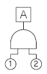
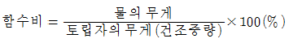
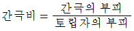
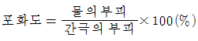
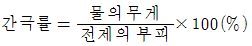
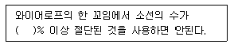

건설안전산업기사 (2015-05-31 기출문제)
1과목: 산업안전관리론
1. 다음 중 산업안전보건법령상 자율안전확인 대상에 해당 하는 방호장치는?
- 압력용기 압력방출용 파열판
- 보일러 압력방출용 안전밸브
- 교류 아크용접기용 자동전격방지기
- 방폭구조(防)爆構造) 전기기계ㆍ기구 및 부품
(정답률: 69%)

2. 앞에 실시한 학습의 효과는 뒤에 실시하는 새로운 학습에 직접 또는 간접으로 영향을 주는데 이러한 현상을 전이(轉移, transfer)라 한다. 다음 중 전이의 조건이 아닌 것은?
- 학습자료의 유사성 요인
- 학습 평가자의 지식 요인
- 선행학습정도의 요인
- 학습자의 태도 요인
(정답률: 59%)
3. 다음 중 안전교육의 종류에 포함되지 않는 것은?
- 태도교육
- 지식교육
- 직무교육
- 기능교육
(정답률: 65%)
4. 다음 중 산업안전보건법령상 안전보건개선 계획서에 반드시 포함되어야 할 사항과 가장 거리가 먼 것은?
- 안전ㆍ보건교육
- 안전ㆍ보건관리체제
- 근로자 채용 및 배치에 관한 사항
- 산업재해예방 및 작업환경의 개선을 위하여 필요한 사항
(정답률: 73%)
5. 인간의 특성에 관한 측정검사에 대한 과학적 타당성을 갖기 위하여 반드시 구비해야 할 조건에 해당되지 않는 것은?
- 주관성
- 신뢰도
- 타당도
- 표준화
(정답률: 72%)
6. 다음 중 인간의 행동 변화에 있어 가장 변화시키기 어려운 것은?
- 지식의 변화
- 집단의 행동 변화
- 개인의 태도 변화
- 개인의 행동 변화
(정답률: 70%)
7. 다음 중 기업의 산업재해에 대한 과거와 현재의 안전성적을 비교, 평가한 점수로 안전관리의 수행도를 평가하는데 유용한 것은?
- safe-T-score
- 평균강도율
- 종합재해지수
- 안전활동률
(정답률: 71%)
8. 다음 중 매슬로우(Maslow)의 욕구 위계이론 5단계를 올바르게 나열한 것은?
- 생리적 욕구 → 안전의 욕구 → 사회적 욕구 → 존경의 욕구 → 자아 실현의 욕구
- 생리적 욕구 → 안전의 욕구 → 사회적 욕구 → 자아 실현의 욕구 → 존경의 욕구
- 안전의 욕구 → 생리적 욕구 → 사회적 욕구 → 자아 실현의 욕구 → 존경의 욕구
- 안전의 욕구 → 생리적 욕구 → 사회적 욕구 → 존경의 욕구 → 자아 실현의 욕구
(정답률: 79%)
9. 무재해운동의 추진기법 중 “지적ㆍ확인”이 불안전 행동 방지에 효과가 있는 이유와 가장 거리가 먼 것은?
- 긴장된 의식의 이완
- 대상에 대한 집중력의 향상
- 자신과 대상의 결합도 증대
- 인지(cognition) 확률의 향상
(정답률: 65%)
10. 다음 중 조건반사설에 의거한 학습이론의 원리가 아닌 것은?
- 강도의 원리
- 일관성의 원리
- 계속성의 원리
- 시행착오의 원리
(정답률: 55%)
11. 다음 중 타박, 충돌, 추락 등으로 피부 표면보다는 피하조직 등 근육부를 다친 상해를 무엇이라 하는가?
- 골절
- 자상
- 부종
- 좌상
(정답률: 79%)
12. 산업안전보건법령상 안전ㆍ보건표지에 사용하는 색채 가운데 비상구 및 피난소, 사람 또는 차량의 통행표지 등에 사용하는 색채는?
- 흰색
- 녹색
- 노란색
- 파란색
(정답률: 79%)
13. 다음 중 산업안전보건법령상 안전인증대상 보호구의 안전인증제품에 안전인증 표시 외에 표시하여야 할 사항과 가장 거리가 먼 것은?
- 안전인증 번호
- 형식 또는 모델명
- 제조번호 및 제조연월
- 물리적, 화학적 성능기준
(정답률: 67%)
14. 다음 중 산업안전보건법령상 특별안전ㆍ보건교육의 대상 작업에 해당하지 않는 것은?
- 석면해체ㆍ제거작업
- 밀폐된 장소에서 하는 용접작업
- 화학설비 취급품의 검수ㆍ확인 작업
- 2m 이상의 콘크리트 인공구조물의 해체 작업
(정답률: 68%)
15. 도수율이 13.0, 강도율 1.20인 사업장이 있다. 이 사업장의 환산도수율은 얼마인가? (단, 이 사업장 근로자의 평생근로시간은 10만 시간으로 가정한다.)
- 1.3
- 10.8
- 12.0
- 92.3
(정답률: 43%)
16. 어떤 상황의 판단 능력과 사실의 분석 및 문제의 해결 능력을 키우기 위하여 먼저 사례를 조사하고, 문제적 사실들과 그의 상호 관계에 대하여 검토하고, 대책을 토의하도록 하는 교육기법은 무엇인가?
- 심포지엄(symposium)
- 로울 플레잉(role playing)
- 케이스 메소드(case method)
- 패널 디스커션(panel discussion)
(정답률: 53%)
17. 다음 중 사고예방대책 제5단계의 "시정책의 적용"에서 3E와 관계가 없는 것은?
- 교육(Education)
- 재정(Economics)
- 기술(Engineering)
- 관리(Enforcement)
(정답률: 66%)
18. 다음 중 재해예방의 4원칙에 해당하지 않는 것은?
- 예방 가능의 원칙
- 손실 우연의 원칙
- 원인 계기의 원칙
- 선취 해결의 원칙
(정답률: 69%)
19. 다음 중 리스크 테이킹(risk taking)의 빈도가 가장 높은 사람은?
- 안전지식이 부족한 사람
- 안전기능이 미숙한 사람
- 안전태도가 불량한 사람
- 신체적 결함이 있는 사람
(정답률: 70%)
20. 다음 중 리더십(leadership)의 특성으로 볼 수 없는 것은?
- 민주주의적 지휘 형태
- 부하와의 넓은 사회적 간격
- 밑으로부터의 동의에 의한 권한 부여
- 개인적 영향에 의한 부하와의 관계 유지
(정답률: 67%)
2과목: 인간공학 및 시스템안전공학
21. 종이의 반사율이 50%이고, 종이상의 글자 반사율이 10%일 때 종이에 의한 글자의 대비는 얼마인가?
- 10%
- 40%
- 60%
- 80%
(정답률: 46%)
22. 눈의 피로를 줄이기 위해 VDT 화면과 종이 문서 간의 밝기의 비는 최대 얼마를 넘지 않도록 하는가?
- 1 : 20
- 1 : 50
- 1 : 10
- 1 : 30
(정답률: 51%)
23. 시스템의 성능 저하가 인원의 부상이나 시스템 전체에 중대한 손해를 입히지 않고 제어가 가능한 상태의 위험 강도는?
- 범주 1 : 파국적
- 범주 2 : 위기적
- 범주 3 : 한계적
- 범주 4 : 무시
(정답률: 62%)
24. 다음 중 귀의 구조에서 고막에 가해지는 미세한 압력의 변화를 증폭하는 곳은?
- 외이(Outer Ear)
- 중이(Middle Ear)
- 내이(Inner Ear)
- 달팽이관(Cochlea)
(정답률: 52%)
25. 다음 중 시스템 내의 위험요소가 어떤 상태에 있는가를 정성적으로 분석ㆍ평가하는 가장 첫 번째 단계에 실시하는 위험분석기법은?
- 결함수분석
- 예비위험분석
- 결함위험분석
- 운용위험분석
(정답률: 64%)
26. 다음 중 FTA 분석을 위한 기본적인 가정에 해당하지 않는 것은?
- 중복사상은 없어야 한다.
- 기본사상들의 발생은 독립적이다.
- 모든 기존사상은 정상사상과 관련되어 있다.
- 기본사상의 조건부 발생확률은 이미 알고 있다.
(정답률: 42%)
27. 어떤 공장에서 10000시간 동안 15000개의 부품을 생산 하였을 때 설비고장으로 인하여 15개의 불량품이 발생하였다면 평균고장간격(MTBF)은 얼마인가?
- 1 ˟106 시간
- 2 ˟106 시간
- 1 ˟107 시간
- 2 ˟107 시간
(정답률: 40%)
28. 다음 중 단순반복 작업으로 인한 질환의 발생 부위가 다른 것은?
- 요부염좌
- 수완진동증후군
- 수근관증후군
- 결절종
(정답률: 53%)
29. 크기가 다른 복수의 조종장치를 촉감으로 구별 할 수 있도록 설계할 때 구별이 가능한 최소의 직경 차이와 최소 의 두께 차이로 가장 적합한 것은?
- 직경 차이 : 0.95cm, 두께 차이 : 0.95cm
- 직경 차이 : 1.3cm, 두께 차이 : 0.95cm
- 직경 차이 : 0.95cm, 두께 차이 : 1.3cm
- 직경 차이 : 1.3cm, 두께 차이 : 1.3cm
(정답률: 48%)
30. 동전던지기에서 앞면이 나올 확률 P(앞)=0.9 이고, 뒷면이 나올 확률 P(뒤)=0.1 일 때, 앞면과 뒷면이 나올 사건 각각의 정보량은?
- 앞면 : 0.10bit, 뒷면 : 3.32bit
- 앞면 : 0.15bit, 뒷면 : 3.32bit
- 앞면 : 0.10bit, 뒷면 : 3.52bit
- 앞면 : 0.15bit, 뒷면 : 3.52bit
(정답률: 62%)
31. 서서하는 작업의 작업대 높이에 대한 설명으로 틀린 것은?
- 경작업의 경우 팔꿈치 높이보다 5~10cm 낮게 한다.
- 중작업의 경우 팔꿈치 높이보다 10~20cm 낮게 한다.
- 정밀작업의 경우 팔꿈치 높이보다 약간 높게 한다.
- 부피가 큰 작업물을 취급하는 경우 최대치 설계를 기본으로 한다.
(정답률: 55%)
32. 다음 중 작업장에서 구성요소를 배치하는 인간 공학적 원칙과 가장 거리가 먼 것은?
- 선입선출의 원칙
- 사용빈도의 원칙
- 중요도의 원칙
- 기능성의 원칙
(정답률: 68%)
33. 다음 중 인간-기계 인터페이스(human-machine interface)의 조화성과 가장 거리가 먼 것은?
- 인지적 조화성
- 신체적 조화성
- 통계적 조화성
- 감성적 조화성
(정답률: 43%)
34. 다음 중 시각적 표시장치에 있어 성격이 다른 것은?
- 디지털 온도계
- 자동차 속도계기판
- 교통신호등의 좌회전 신호
- 은행의 대기인원 표시등
(정답률: 56%)
35. FTA에서 사용되는 논리게이트 중 여러 개의 입력 사상이 정해진 순서에 따라 순차적으로 발생해야만 결과가 출력되는 것은?
- 억제 게이트
- 우선적 AND 게이트
- 배타적 OR 게이트
- 조합 AND 게이트
(정답률: 63%)
36. 소음을 측정하는 단위는?
- 데시벨(dB)
- 지멘스(S)
- 루멘(lumen)
- 거스트(Gust)
(정답률: 79%)
37. 신기술, 신공법을 도입함에 있어서 설계, 제조, 사용의 전과정에 걸쳐서 위험성의 여부를 사전에 검토하는 관리기술은?
- 예비위험 분석
- 위험성 평가
- 안전분석
- 안전성 평가
(정답률: 36%)
38. 인체의 동작 유형 중 굽혔던 팔꿈치를 펴는 동작을 나타내는 용어는?
- 내전(adduction)
- 회내(pronation)
- 굴곡(flexion)
- 신전(extension)
(정답률: 57%)
39. 인간공학의 주된 연구 목적과 가장 거리가 먼 것은?
- 제품품질 향상
- 작업의 안정성 향상
- 작업환경의 쾌적성 향상
- 기계조작의 능률성 향상
(정답률: 53%)
40. FT도에서 정상사상 A의 발생확률은? (단, 기본사상 ①과 ②의 발생확률은 각각 2×10-3/h, 3×10-2 /h 이다.)

- 5×10-5/h
- 6×10-5/h
- 5×10-6/h
- 6×10-6/h
(정답률: 54%)
3과목: 건설시공학
41. 자연 함수비가 어떤 상태에 있을 때 점토지반이 가장 안전한가?
- 소성한계
- 소성과 수축한계 사이
- 액성한계
- 수축한계
(정답률: 42%)
42. 공정계획 및 관리에 있어 작업의 집약화와 가장 관계가 먼 것은?
- 부분공사로서 이미 자료화 되어 있는 작업군
- 투입되는 자원의 종류가 다른 작업군
- 관리외의 작업군
- 현시점에서 관리상의 중요도가 적은 작업군
(정답률: 46%)
43. 용접봉의 용접 방향에 대하여 서로 엇갈리게 움직여서 금속을 용착시키는 운봉방식은?
- 언더컷(undercut)
- 오버랩(overlap)
- 위빙(weaving)
- 크랙(crack)
(정답률: 74%)
44. 기둥 거푸집의 고정 및 측압 버팀용으로 사용하는 것은?
- 턴버클
- 세퍼레이터
- 플랫타이
- 컬럼밴드
(정답률: 61%)
45. 시공계획서에 기재되어야 할 사항으로 부적합한 것은?
- 작업의 질과 양
- 시공조건
- 사용재료
- 마감시공도
(정답률: 43%)
46. 철골구조의 조립 및 설치와 관계 없는 것은?
- 토크렌치(torque wrench)
- 타워크레인(tower crane)
- 임팩트 렌치(impact wrench)
- 트렌치 컷(Trench cut)
(정답률: 62%)
47. 토질시험 항목 중 흙속에 수분이 있어 끈기가 있는 상태의 정도를 알아내기 위해 실시하는 시험항목은?
- 함수비 시험
- 흙의 비중시험
- 흙의 액성한계시험
- 흙의 소성한계시험
(정답률: 54%)
48. 철골 공사에서 각 용접부의 명칭에 관한 설명으로 옳지 않은 것은?
- 앤드 탭(End Tab) : 모재 양 쪽에 모재와 같은 개선 형상을 가진 판
- 뒷댐재 : 루트 간격 아래에 판을 부착한 것
- 스캘럽 : 용접선의 교차를 피하기 위하여 부채꼴과 같이 오목, 들어가게 파 놓은 것
- 스패터 : 모살 용접이 각진 부분에서 끝날 경우 각진 부분에서 그치지 않고 연속적으로 그 각을 돌아가며 용접하는 것
(정답률: 56%)
49. 지형과 지반의 상태에 따라 지하수가 펌프 사용 없이 솟아나는 자분샘물을 무엇이라 하는가?
- 히빙
- 보일링
- 정압수
- 피압수
(정답률: 57%)
50. 수입을 수반한 공공 프로젝트에 있어서 자금을 조달하고, 설계⋅엔지니어링, 시공전부를 도급받아 시설물을 완성하고, 그 시설을 10~30년 동안 운영하는 것으로 운영수입으로부터 투자자금을 회수한 후 발주자에게 그 시설을 인도 하는 방식은?
- BOT(Build-Operate-Transfer) 방식
- Partnering 방식
- Project management 방식
- Design Build 방식
(정답률: 75%)
51. 콘크리트 비파괴검사 중에서 강도를 추정하는 측정 방법과 거리가 먼 것은?
- 슈미트 해머법
- 초음파 속도법
- 인발법
- 방사선 투과법
(정답률: 43%)
52. 공사 도급계약 체결시 첨부하지 않아도 좋은 서류는?
- 도급계약서
- 설계도
- 공사시방서
- 공사 공정표
(정답률: 42%)
53. 보일링(Boiling) 현상을 방지하기 위한 방법으로 옳지 않은 것은?
- 약액주입 등으로 굴착 지면의 지수를 한다.
- 안전율을 만족하도록 흙막이 벽의 타입 깊이를 늘린다.
- 지하수위를 저하하는 공법을 사용한다.
- 흙막이 벽의 배면 지하수위와 굴착저면과의 수위차를 크게 한다.
(정답률: 56%)
54. 철근콘크리트 보강 블록공사에 대한 설명 중 옳지 않은 것은?
- 보강근이 들어간 부분은 블록 2단마다 콘크리트나 모르타르를 충분히 충전시켜 철근이 녹스는 것을 방지한다.
- 블록 쌓기 시 되도록 고저차가 없도록 수평이 되게 쌓아 올린다.
- 벽의 세로근은 원칙적으로 이음을 만들지 않고 기초와 테두리보에 정착시킨다.
- 블록의 빈속을 철근과 콘크리트로 보강하여 장막벽을 구성하는 것이다.
(정답률: 41%)
55. 콘크리트 보양에 관한 설명으로 옳지 않은 것은?
- 경화온도를 높이기 위하여 직사일광에 노출시킨다.
- 수화작용이 충분히 일어나도록 항상 습윤상태를 유지 한다.
- 콘크리트를 부어넣은 후 1일간은 원칙적으로 그 위를 보행해서는 안된다.
- 평균기온이 연속적으로 2일 이상 5℃ 미만인 경우, 담당원 또는 책임기술자의 지시에 따라 가열보온양생을 고려해야 한다.
(정답률: 67%)
56. 철골공사의 용접작업 시 맞댄용접의 앞벌림 모양과 관련이 없는 것은?
- I자형
- U자형
- Z자형
- H자형
(정답률: 63%)
57. 배치도에 나타난 건물의 위치를 대지에 표시하여 대지 경계선과 도로경계선 등을 확인하기 위한 것은?
- 수평규준틀
- 줄쳐보기
- 기준점
- 수직규준틀
(정답률: 54%)
58. 다음 용어에 대한 정의로 틀린 것은?




(정답률: 58%)
59. 바닥판, 보의 거푸집 설계 시 고려하는 계산용 하중과 가장 거리가 먼 것은?
- 굳지 않은 콘크리트중량
- 거푸집의 자중
- 작업하중
- 충격하중
(정답률: 54%)
60. 콘크리트 타설에 앞서 거푸집에 물뿌리기를 하는 가장 큰 이유는?
- 콘크리트에 대한 거푸집의 수분흡수를 방지하기 위하여
- 거푸집에 발생하는 측압의 감소를 위하여
- 거푸집의 휨을 방지하기 위하여
- 콘크리트의 초기 강도 증진을 위하여
(정답률: 70%)
4과목: 건설재료학
61. 합성수지에 대한 설명 중 틀린 것은?
- 요소수지 : 내수합판의 접착제로 널리 사용되며 도료, 마감재, 장식재로 쓰인다.
- 에폭시수지 : 내수성, 내약품성, 전기절연성이 우수하여 건축 분야에 널리 사용된다.
- 실리콘 : 발수성이 좋지 않으며, 기포성 제품으로 가공하여 보온재나 쿠션재로 사용된다.
- 아크릴수지 : 투명도가 높아 채광판, 도어판, 칸막이벽 등에 쓰인다.
(정답률: 68%)
62. 기건상태인 목재의 함수율은 약 얼마인가?
- 10% 정도
- 15% 정도
- 20% 정도
- 25% 정도
(정답률: 70%)
63. 과소품(過燒品)벽돌의 특징으로 틀린 것은?
- 강도가 약하다.
- 형태가 고르지 못하다.
- 균열이 많이 보인다.
- 색채가 고르지 못하다.
(정답률: 52%)
64. 콘크리트의 워커빌리티 측정법이 아닌 것은?
- 슬럼프시험
- 다짐계수시험
- 비비시험
- 슈미트해머시험
(정답률: 66%)
65. 목재의 성질에 관한 설명으로 틀린 것은?
- 비중이 큰 목재는 일반적으로 강도가 크다.
- 가공은 쉽지만 부패하기 쉽다.
- 열전도율이 커서 보온재료로 사용이 불가능하다.
- 섬유 방향에 따라서 전기전도율은 다르다.
(정답률: 63%)
66. 다음 미장재료 중 경화속도가 가장 빠른 것은?
- 시멘트 모르타르
- 회반죽
- 돌로마이트 플라스터
- 석고 플라스터
(정답률: 47%)
67. 콘크리트의 건조수축에 대한 설명으로 옳은 것은?
- 단위수량이 증가하면 건조수축량이 감소한다.
- 부재치수가 클수록 건조수축량이 적다.
- 골재 중에 포함한 미립분이나 점토는 건조수축을 감소 시킨다.
- 습윤양생기간은 건조수축에 큰 영향을 준다.
(정답률: 32%)
68. 보통포틀랜드 시멘트의 품질규정(KS L5201)에서 비카 시험의 초결시간과 종결시간으로 옳은 것은?
- 30분 이상 - 6시간 이하
- 60분 이상 - 6시간 이하
- 60분 이상 - 10시간 이하
- 2시간 이상 - 10시간 이하
(정답률: 54%)
69. 다음 석재 중 외장용으로 가장 부적합한 것은?
- 대리석
- 화강석
- 안산암
- 점판암
(정답률: 64%)
70. 도막 방수재료의 특징으로 틀린 것은?
- 복잡한 부위의 시공성이 좋다.
- 신속한 작업 및 접착성이 좋다.
- 바탕면의 미세한 균열에 대한 저항성이 있다.
- 누수시 결함 발견이 어렵고 국부적으로 보수가 어렵다.
(정답률: 66%)
71. 목재의 무늬나 바탕의 특징을 잘 나타낼 수 있는 마무리 도료는?
- 유성페인트
- 클리어 래커
- 에나멜 래커
- 수성페인트
(정답률: 65%)
72. 재료의 열팽창계수에 대한 설명으로 틀린 것은?
- 온도의 변화에 따라 물체가 팽창⋅수축하는 비율을 말한다.
- 길이에 관한 비율인 선팽창계수와 용적에 관한 체적 팽창계수가 있다.
- 일반적으로 체적팽창계수는 선팽창계수의 3배이다.
- 체적팽창계수의 단위는 W/mㆍ/K 이다.
(정답률: 45%)
73. 다음은 시멘트를 조기강도가 큰 것으로부터 작은 순서대로 열거한 것이다. 옳은 것은?
- 알루미나 시멘트 - 고로 시멘트 - 보통 포틀랜드 시멘트
- 보통 포틀랜드 시멘트 - 고로 시멘트 - 알루미나 시멘트
- 알루미나 시멘트 - 보통 포틀랜드 시멘트 - 고로 시멘트
- 보통 포틀랜드 시멘트 - 알루미나 시멘트 - 고로 시멘트
(정답률: 61%)
74. 테라코타에 대한 설명으로 틀린 것은?
- 도토, 자토 등을 반죽하여 형틀에 넣고 성형하여 소성한 속이 빈 대형의 점토제품이다.
- 석재보다 가볍다.
- 압축강도는 화강암과 거의 비슷하다.
- 화강암보다 내화도가 높으며 대리석보다 풍화에 강하다.
(정답률: 50%)
75. 다음 금속 중 이온화 경향이 가장 큰 것은?
- Zn
- Cu
- Ni
- Fe
(정답률: 47%)
76. 수화속도를 지연시켜 수화열을 작게 한 시멘트로, 건조 수축이 작고 내황산염이 크며, 건축용 매스콘크리트 등에 사용 되는 시멘트는?
- 중용열 포틀랜드시멘트
- 조강 포틀랜드시멘트
- 초조강 포틀랜드시멘트
- 백색 포틀랜드 시멘트
(정답률: 64%)
77. 내부에 몇 개의 구멍을 가진 벽돌로 단열, 방음을 위해 방음벽, 단열벽 등에 사용되며, 경량으로 칸막이벽에도 사용되는 것은?
- 중공벽돌
- 이형벽돌
- 규석벽돌
- 샤모트벽돌
(정답률: 47%)
78. 강당, 집회장 등의 음향조절용으로 쓰이거나 일반건물의 벽 수장재로 사용하여 음향효과를 거둘 수 있는 목재제품은?
- 파키트리 블록
- 코펜하겐 리브
- 플로링 보드
- 파키트리 패널
(정답률: 73%)
79. 건물의 바닥 충격음을 저감시키는 방법에 대한 설명으로 틀린 것은?
- 유리면 등의 완충재를 바닥공간 사이에 넣는다.
- 부드러운 표면마감재를 사용하여 충격력을 작게 한다.
- 바닥을 띄우는 이중바닥으로 한다.
- 바닥슬래브의 중량을 작게 한다.
(정답률: 72%)
80. 콘크리트 혼화재료 중 플라이애시(Fly Ash)에 관한 설명으로 틀린 것은?
- 콘크리트의 워커빌리티(workability)를 좋게 한다.
- 주성분은 탄소(C)이다.
- 콘크리트의 수밀성을 향상시킨다.
- 콘크리트의 수화초기 시 발열량을 감소시킨다.
(정답률: 49%)
5과목: 건설안전기술
81. 흙파기 공사용 기계에 관한 설명 중 틀린 것은?
- 불도저는 일반적으로 거리 60m 이하의 배토작업에 사용된다.
- 클램쉘은 좁은 곳의 수직파기를 할 때 사용한다.
- 파워쇼벨은 기계가 위치한 면보다 낮은 곳을 파낼 때 유용하다.
- 백호우는 토질의 구멍파기나 도랑파기에 이용된다.
(정답률: 65%)
82. 작업발판에 최대적재하중을 적재함에 있어 달비계의 하부 및 상부지점이 강재인 경우 안전계수는 최소 얼마 이상인가?
- 2.5
- 5
- 10
- 15
(정답률: 33%)
83. 철골작업시 추락재해를 방지하기 위한 설비가 아닌 것은?
- 안전대 및 구명줄
- 트렌치박스
- 안전난간
- 추락방지용 방망
(정답률: 66%)
84. 옹벽이 외력에 대하여 안정하기 위한 검토 조건이 아닌 것은?
- 전도
- 활동
- 좌굴
- 지반 지지력
(정답률: 48%)
85. 일반 거푸집 설계시 강도상 고려해야 할 사항이 아닌 것은?
- 고정하중
- 풍압
- 콘크리트 강도
- 측압
(정답률: 39%)
86. 차량계 하역운반기계에 화물을 적재할 때의 준수사항과 거리가 먼 것은?
- 하중이 한쪽으로 치우치지 않도록 적재할 것
- 구내운반차 또는 화물자동차의 경우 화물의 붕괴 또는 낙하에 의한 위험을 방지하기 위하여 화물에 로프를 거는 등 필요한 조치를 할 것
- 운전자의 시야를 가리지 않도록 화물을 적재할 것
- 제동장치 및 조정장치 기능의 이상 유무를 점검할 것
(정답률: 62%)
87. 감전재해의 방지대책에서 직접접촉에 대한 방지대책에 해당하는 것은?
- 충전부에 방호망 또는 절연덮개 설치
- 보호접지(기기외함의 접지)
- 보호절연
- 안전전압 이하의 전기기기 사용
(정답률: 51%)
88. 토사 붕괴의 내적 요인이 아닌 것은?
- 절토 사면의 토질구성 이상
- 성토 사면의 토질구성 이상
- 토석의 강도 저하
- 사면, 법면의 경사 증가
(정답률: 57%)
89. 차량계 건설기계의 작업시 작업시작 전 점검사항에 해당되는 것은?
- 권과방지장치의 이상유무
- 브레이크 및 클러치의 기능
- 슬링ㆍ와이어 슬링의 매달린 상태
- 언로드밸브의 이상유무
(정답률: 48%)
90. 채석작업을 하는 경우 지반의 붕괴 또는 토석의 낙하로 인하여 근로자에게 발생할 우려가 있는 위험을 방지하기 위하여 취하여야 할 조치와 가장 거리가 먼 것은?
- 작업 시작 전 작업장소 및 그 주변 지반의 부석과 균열이 유무와 상태 점검
- 함수ㆍ용수 및 동결상태의 변화 점검
- 진동치 속도 점검
- 발파 후 발파장소 점검
(정답률: 41%)
91. 추락재해 방지설비의 종류가 아닌 것은?
- 추락방망
- 안전난간
- 개구부 덮개
- 수직보호망
(정답률: 47%)
92. 철골공사 시 도괴의 위험이 있어 강풍에 대한 안전 여부를 확인해야 할 필요성이 가장 높은 경우는?
- 연면적당 철골량이 일반건물보다 많은 경우
- 기둥에 H형강을 사용하는 경우
- 이음부가 공장용접인 경우
- 호텔과 같이 단면구조가 현저한 차이가 있으며 높이가 20m 이상인 건물
(정답률: 56%)
93. 다음은 이음매가 있는 권상용 와이어로프의 사용금지 규정이다. ( ) 안에 알맞은 숫자는?

- 5
- 7
- 10
- 15
(정답률: 41%)
94. 콘크리트 측압에 관한 설명 중 옳지 않은 것은?
- 슬럼프가 클수록 측압은 커진다.
- 벽 두께가 두꺼울수록 측압은 커진다.
- 부어 넣은 속도가 빠를수록 측압은 커진다.
- 대기 온도가 높을수록 측압은 커진다.
(정답률: 60%)
95. 지반의 침하에 따른 구조물의 안전성에 중대한 영향을 미치는 흙의 간극비의 정의로 옳은 것은?
- 공기의 부피 / 흙입자의 부피
- 공기와 물의 부피 / 흙입자의 부피
- 공기와 물의 부피 / 흙입자에 포함된 물의 부피
- 공기의 부피 / 흙입자에 포함된 물의 부피
(정답률: 44%)
96. 건설업 산업안전보건관리비의 사용항목으로 가장 거리가 먼 것은?
- 안전시설비
- 사업장의 안전진단비
- 근로자의 건강관리비
- 본사 일반관리비
(정답률: 67%)
97. 공사현장에서 낙하물방지망 또는 방호선반을 설치할 때 설치높이 및 벽면으로부터 내민 길이 기준으로 옳은 것은?
- 설치높이 : 10m 이내마다, 내민 길이 2m 이상
- 설치높이 : 15m 이내마다, 내민 길이 2m 이상
- 설치높이 : 10m 이내마다, 내민 길이 3m 이상
- 설치높이 : 15m 이내마다, 내민 길이 3m 이상
(정답률: 55%)
98. 달비계 설치 시 달기체인의 사용 금지 기준과 거리가 먼 것은?
- 달기체인의 길이가 달기체인이 제조된 때의 길이의 5%를 초과한 것
- 균열의 있거나 심하게 변형된 것
- 이음매가 있는 것
- 링의 단면지름이 달기체인이 제조된 때의 해당 링의 지름의 10%를 초과하여 감소한 것
(정답률: 39%)
99. 산업안전보건기준에 관한 규칙에 따른 굴착면의 기울기 기준으로 틀린 것은?(2021년 11월 19일 개정된 규정 적용됨)
- 보통흙 습지 - 1:1 ~ 1:1.5
- 풍화암 - 1:0.8
- 보통흙 건지 - 1:0.5 ~ 1:1
- 경암 - 1:0.5
(정답률: 58%)
100. 차량계 하역운반기계의 운전자가 운전위치를 이탈하는 경우 조치해야 할 내용 중 틀린 것은?
- 포크 및 버킷을 가장 높은 위치에 두어 근로자 통행을 방해하지 않도록 하였다.
- 원동기를 정지시켰다.
- 브레이크를 걸어두고 확인 하였다.
- 경사지에서 갑작스런 주행이 되지 않도록 바퀴에 블록 등을 놓았다.
(정답률: 66%)